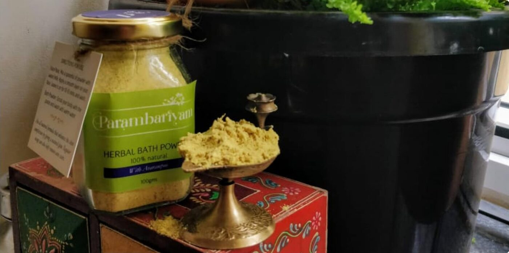
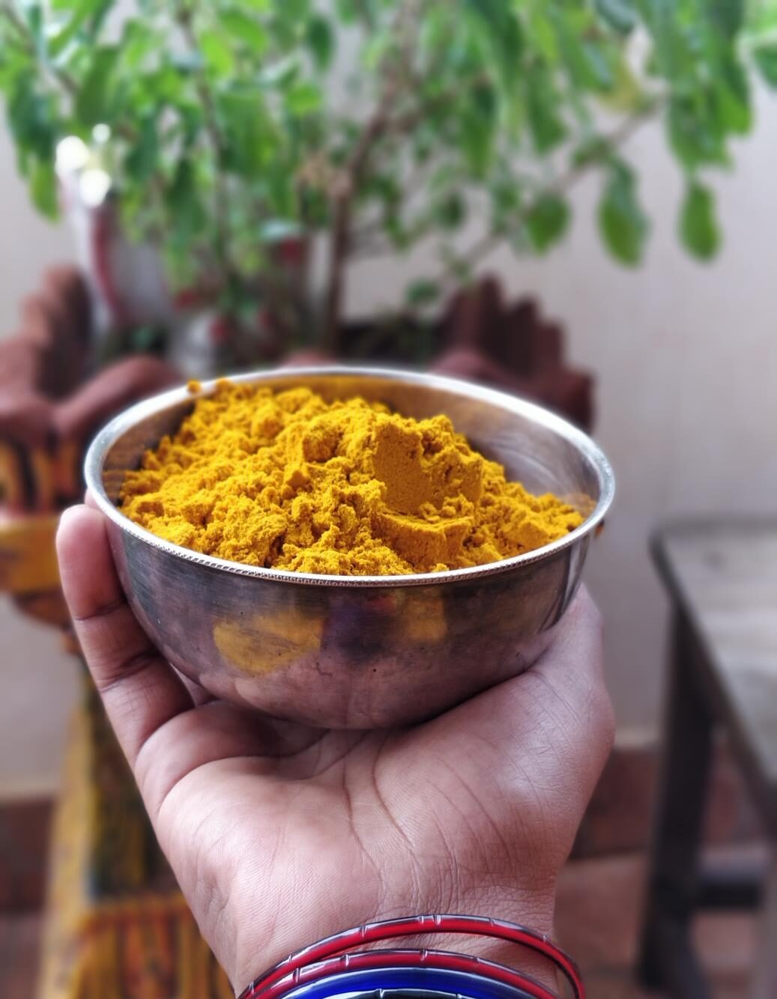
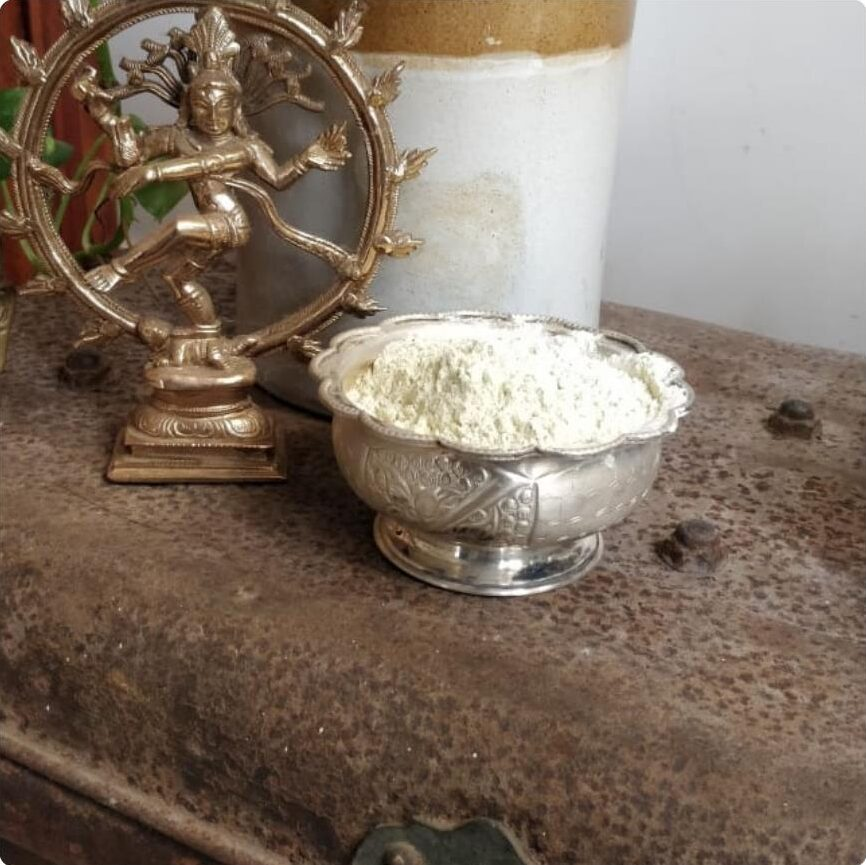
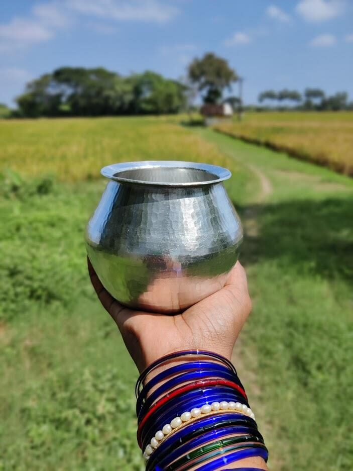

Rituals from paati's kitchen, made by hand again.
Herbal bath powders, shikakai, slow-infused hair oil and time-tested kitchen remedies. Hand-picked, sun-dried and ground in small batches, with nothing you can't pronounce.
or fragrance
and seeds
in a home kitchen


Four rituals, one philosophy
Made in small batches, reordered by the kilo

Our grandmothers never needed a label to read.
Before shampoo bottles and soap bars, every Tamil home had a tin of nalangu maavu and a jar of seeyakkai on the shelf. The recipes lived in our grandmothers' hands.
Parambariyam brings them back, exactly as they were. Every herb is picked by hand, dried in the sun and ground in our home kitchen. No shortcuts, no chemicals, no factory.
"If you can't eat it, think twice before you put it on your skin."
Read our story →Slow by design
Four steps, the same ones our families followed. It takes days, not minutes, and that is the point.
Hand-picked
Roots, flowers, seeds and leaves are sourced whole and sorted by hand.
Sun-dried
Dried naturally under the sun to lock in aroma and potency. No ovens.
Finely ground
Pounded and ground fine so powders blend smooth and rinse clean.
Packed fresh
Made in small batches and packed to order. What reaches you is fresh.
Swap your soap in three steps
One spoon of Nalangu Maavu does the work of a soap, a scrub and a face pack.
Mix
A spoonful of powder with water, milk, curd or rose water into a smooth paste.
Massage
On damp skin, in gentle circles. Let the green gram and herbs lift away the day.
Rinse
With lukewarm water. As a face pack, leave on for ten minutes first.

Rasam tastes better in an eeyachombu. Ask any paati.
Hand-hammered in pure vellieeyam (tin). Heavy because it is solid metal. And no, there is no lead in it.
- Four sizes, from 700 ml to 1450 ml
- Various shapes on request
- Always fill with water or puli thanni before heating
What goes in. Nothing else.
Every ingredient we use, in the names our grandmothers used, and what each one does.
Zero chemicals
No preservatives, fragrance, colour or fillers. Ever.
Home kitchen made
Small batches, prepared by hand, packed fresh.
Sun-dried
The old way, so aroma and potency stay intact.
A real person replies
Every order is confirmed personally on WhatsApp.
Return gifts, weddings, valaikaappu, bulk orders.
Custom hampers of bath powders, brass filters and eeyachombu, packed with care. Tell us the occasion and quantity, and we'll put it together.